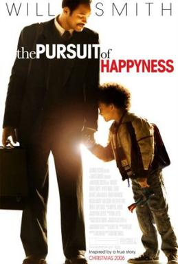

The Social Network
David Fincher

From the first sentence, the first word, the first nervily in-drawn breath, this compulsively watchable picture announces itself as the unmistakable work of Aaron Sorkin. His whip-smart, mile-a-minute dialogue made The West Wing deeply addictive on TV, and after uncertain works such as Charlie Wilson's War and the strange, small-screen drama Studio 60 on the Sunset Strip – in which Sorkin's distinctive, faintly martyred seriousness was bafflingly applied to the backstage shenanigans of a fictional television comedy – this writer is triumphantly back on form. He's found an almost perfect subject: the creation of the networking website Facebook, and the backstabbing legal row among the various nerds, geeks, brainiacs and maniacs about who gets the credit and the cash. Part boardroom drama, part conspiracy thriller, the story is adapted from Ben Mezrich's non-fiction The Accidental Billionaires. There appears, however, to be nothing accidental about it. The film version perfectly displays Sorkin's gift for creating instantly believable sympathetic-yet-irritating characters, and the chief of these is Facebook's driving force, Mark Zuckerberg, played with exemplary intuition by Jesse Eisenberg. He is a borderline sociopath, never smiling, never raising his voice, never conceding an argument, driven to create his masterpiece through the unforgettable pain of being dumped in the movie's opening scene. What perfect casting Eisenberg is. (I couldn't help remembering, incidentally, his character's disparagement of Facebook in the movie Zombieland: jeering at idiots with status updates like: "Limbering up for the weekend.") Sorkin gives everyone great lines. It's pretty much a non-stop fusillade of put-downs, insights and zingers. I wonder if the real-life Zuckerberg has ever physically said as many words as this in his entire life. David Fincher's direction creates just the right intensity and claustrophobia for a story that takes place largely in a stupefyingly male environment at Harvard University in 2003, shown in flashback from various acrimonious legal proceedings. Here, computer-science student Zuckerberg has the same sense of entitlement and self-congratulation as everyone else, but combined with social resentment about being barred from snobby fraternities and clubs. When his girlfriend Erica (Rooney Mara) breaks up with him, the director shows how the emotionally wounded Zuckerberg embarks on a retaliatory campaign not far from the sinister world of Fincher's serial-killer films Se7en and Zodiac. He blogs vengefully about Erica and, in an evil-genius frenzy, creates Facemash, a spiteful and misogynistic site that invites the guys to rate campus girls against each other. (Slightly leniently, the movie explains it away a little by emphasising that Zuckerberg has had a couple of beers.) It is from this beginning that the smilier, friendlier Facebook emerges. But we have been cleverly shown the site's nastier, more paranoid origins: a clue to its unspoken world of friend-number envy, cyber-stalking and anxiety about having no friends at all. Zuckerberg gets investment from fellow geek Eduardo Saverin, played by Andrew Garfield, of whose marginally superior social success he is jealous and whom he later betrays by cutting him out of the action in favour of web entrepreneur Sean Parker, smoothly played by Justin Timberlake. Wealthy alpha-male twin brothers Cameron and Tyler Winklevoss (both played by Armie Hammer) plan to launch their own site, called The Harvard Connection, and try to recruit Mark as their tame techie-nerd; initially dazzled by their cachet, Zuckerberg plays them along, fatally delaying their launch while secretly getting his own up and running. Shrewdly, Sorkin and Fincher show how the Winklevosses are afraid to sue, because that's not the action of an effortlessly superior Harvard man. Probably conceived when Facebook was at the top of the heap, the movie now arrives in cinemas at a time when Twitter has overtaken it in zeitgeisty importance: a lesson in how fast-moving internet trends can be. It would be great to see a movie about an ageing Australian-American media mogul trying to stay with-it and hip by tragically investing in MySpace – what tremendous scenes of rage-filled incomprehension there could be as the great man rants in front of downward-trending graphs. Or perhaps a Made in Dagenham-type British comedy about that once whiter-than-white-hot phenomenon Friends Reunited, run by a blameless couple in a spare room of their Barnet home: a dark destroyer of marriages, a reopener of school-day wounds, far more toxic than Facebook could ever be. The success of The Social Network lies in capturing the fever of Facebook's startup, while subversively implying that it created money and ephemeral buzz, but not a whole lot else; there is very little about the interconnectivity and creativity that its evangelisers often claim. With its fanatical rivalry, envy and preeningly clever half-wits butting heads, the film reminded me a little of the BBC's excellent TV play Life Story from 1987, the story of Francis Crick and James Watson and their ill-tempered race to discover the structure of DNA before anyone else. (Sam Mendes and Pippa Harris are reportedly developing a remake.) Yet that was a story with something substantial at its close. This has … well, what? At the end, all is loneliness. This is an exhilaratingly hyperactive, hyperventilating portrait of an age when Web 2.0 became sexier and more important than politics, art, books – everything. Sorkin and Fincher combine the excitement with a dark, insistent kind of pessimism. Smart work.
The Pursuit of Happyness
Sharon Waxman

What Mr. Gardner and Mr. Smith do share is optimism and an unquenchable drive to succeed. In Mr. Smith's case that success came early; he turned to music as the Fresh Prince, then to television, then to movies. Mr. Gardner had a more torturous run. He had some initial good luck, with a series of mentors that led from the Navy to the Veterans Administration in San Francisco, where he conducted medical research. But his job there did not pay well. And after unsuccessfully selling medical equipment, he decided to try for the brass ring and be a stockbroker. He even managed to land the traineeship at Dean Witter without a college degree. But life got complicated: His wife left. Soon he and his new girlfriend had a child. Then she left too, returning after several months to deposit their son, when she found she couldn't make it on her own. Mr. Gardner chose to keep the boy, whatever the cost, while he continued to aim for the greatest possible success. This wasn't exactly practical, but Mr. Smith understands the decision perfectly.“I can so relate to that,” Mr. Smith said. “I am that guy. I have to be the best I can be. I have to achieve everything I can possibly achieve. I feel like I owe it to every single person I came into contact with, who knows my life, I owe it to them. It's a call from God, or Allah, or Jehovah. I don't even necessarily know why.“The beauty of America is that we're not realistic. The idea that anything is possible, that idea is being kept alive here. This story is why America worked — as an idea. The idea is that this is the only country in the world where Chris Gardner is possible. The pursuit is what makes America great.” Then Will Smith did something surprising. He recited the Declaration of Independence. The whole first segment, including the “pursuit of happiness,” rapid-fire. When he finished, and noted the surprise of an observer, he said: “I believe it.” Pause. “I don't believe we do it well.” And he recalled a moment from when he was walking through the Tenderloin with Mr. Gardner. “We were just standing out there in this place of broken dreams. Of extreme poverty. And it washed over me that the greatest poverty is the poverty of ideas. Chris was equally impoverished as these people, but he never had the poverty of ideas. He was rich with belief. Rich with faith.” He smiled, that sunny It's-Will-Smith-Things-Are-Looking-Up smile. “And I've always felt like that.”
Knives Out
Brian Tallerico

Rian Johnson’s “Knives Out” is one of the most purely entertaining films in years. It is the work of a cinematic magician, one who keeps you so focused on what the left hand is doing that you miss the right. And, in this case, it’s not just a wildly fun mystery to unravel but a scathing bit of social commentary about where America is in 2019. Great mystery writers throughout history have dissected class in ways that were palatable to audiences looking for escapism, and Johnson is clearly doing that here too, using a wonderfully entertaining mystery structure that would make Agatha Christie smile. Directing a wildly charismatic cast who are all-in on what he’s doing, Johnson confidently stays a step or two ahead of his audience, leaving them breathless but satisfied at the end. Harlan Thrombey (Christopher Plummer) is a wildly successful mystery writer and he’s dead. His housekeeper Fran (Edi Patterson) finds him with a slit throat and the knife still in his hand. It looks like suicide, but there are some questions. After all, who really slits their own throat? A couple of cops (the wonderful pair of LaKeith Stanfield and Noah Segan) come to the Thrombey estate do a small investigation, just to make sure they’re not missing anything, and the film opens with their conversations with each of the Thrombey family members. Daughter Linda (Jamie Lee Curtis) is a successful businesswoman with a shit husband named Richard (Don Johnson) and an awful son named Ransom (Chris Evans). Son Walt (Michael Shannon) runs the publishing side, but he’s been fighting a lot with dear old dad. Daughter-in-law Joni (Toni Collette) is deep into self-help but has been helping herself by ripping off the old man. Finally, there’s Marta Cabrera (Ana de Armas), the real heroine of “Knives Out” and Harlan’s most trusted confidante. Can she help solve the case? The case may have just been closed if not for the arrival of the famous detective Benoit Blanc, played by Daniel Craig, who spins a southern drawl and oversized ego into something instantly memorable. Blanc was delivered a news story about the suicide and envelope of money. So someone thinks this is fishy. Why? And who? The question of who brought in Blanc drives the narrative as much as who killed Harlan. Johnson is constantly presenting viewers with the familiar, especially fans of the mystery movie—the single palatial setting, the family of monsters, the exaggerated detective—but then he subverts them every so slightly, and it feels fresh. So while Blanc feels like a Poirot riff, Johnson and Craig avoid turning it into a caricature of something we’ve seen before.Craig is delightful—I love the excitement in his voice when he figures things out late in the film—but some of the cast gets lost. It’s inevitable with one this big, but if you’re going to “Knives Out” for a specific actor or actress, be aware that it’s a large ensemble piece and your fave may get short shrift. Unless your favorite is Ana de Armas, who is really the heart of the movie, allowing Johnson to imbue “Knives Out” with some wonderful political commentary. The Thrombeys claim to love Marta, even if they can’t remember which South American country she comes from, and Don Johnson gets a few razor sharp scenes as the kind of guy who rants about immigration before quoting “Hamilton.” It’s not embedded in the entire piece as much as “Get Out,” but this “Out” is similar in the way it uses genre structure to say something about wealth and social inequality. And in terms of performance, the often-promising de Armas has never been handed a role this big, and she totally delivers.“Knives Out” crackles visually, although regular collaborator Steve Yedlin never allows his cinematography to get too showy to distract from the mystery or ensemble. It’s a film that works because of Johnson’s palpable love for the genre, but never becomes too meta or referential. A lot of talented directors have returned to genre movies after making a fortune and brought too much self-awareness with them, but that’s not the case here. Ultimately, as in the films and books that inspired this one, it’s all about the whodunit, which is revealed in such unexpected ways that just when you think you have it all figured out, you realize something doesn’t add up. When it’s actually over (and my God does Johnson stick the landing with one of the best final shots of the year) you’ll unpack its ingenuity like a detective yourself, marveling at not just how the details of what happened that night revealed themselves, but the social message embedded in all of it. It’s tempting to say that it’s a mystery that Harlan Thrombey himself would have loved, but he probably never wrote one this good.This review was filed from the Toronto International Film Festival on September 8, 2019.